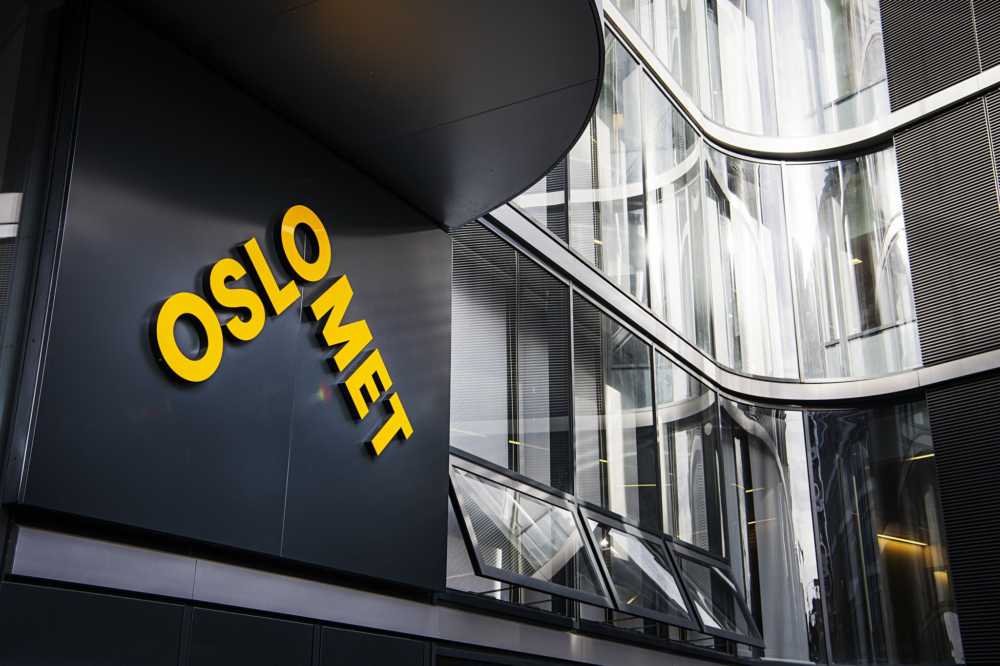
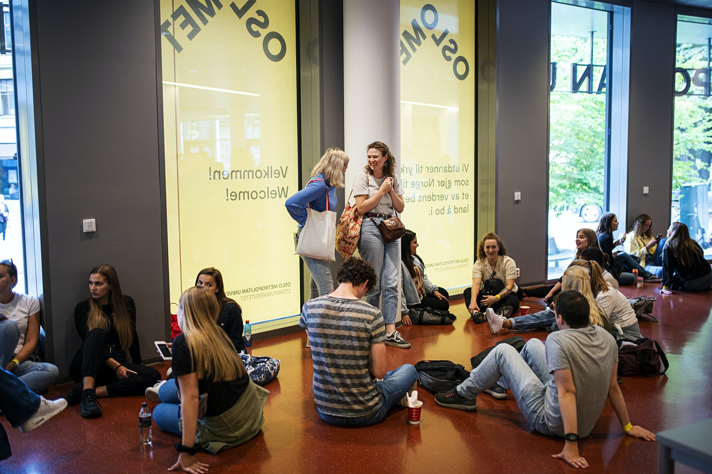
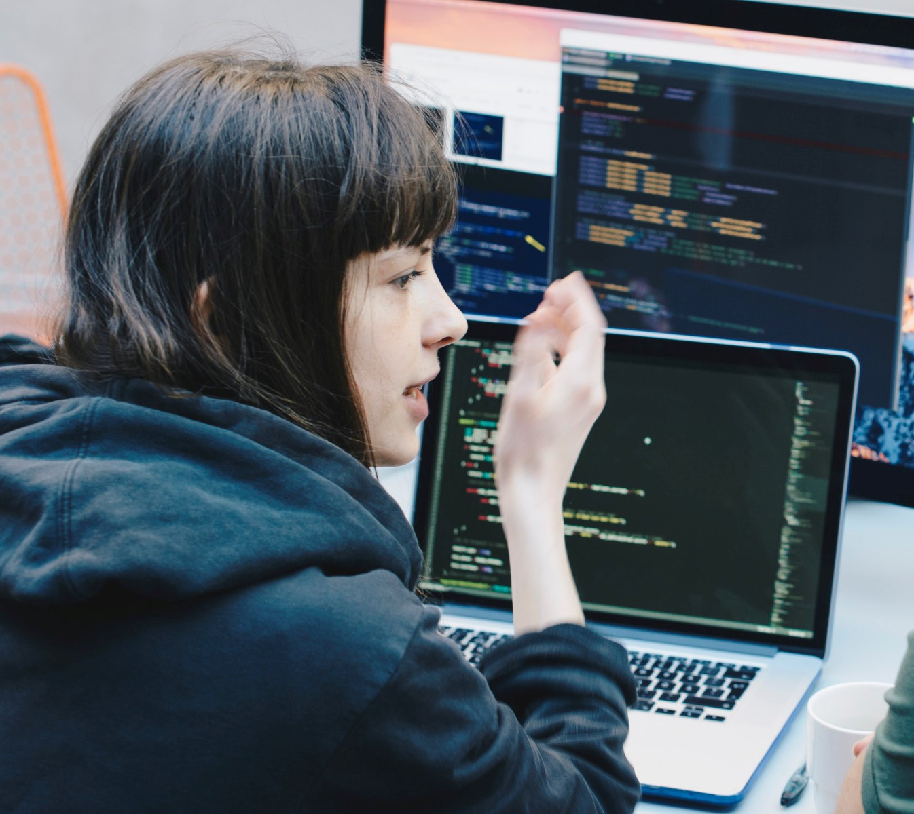

Managing The Workload
More responsibility

One of the biggest differences going from upper-secondary school to a university is that you now are an
adult. With that usually comes more responsibility. Many move out from their parent’s house for the first
time and had to live on their own. This is not cheap and the student loan is limited so many find the need
to work to make the economy go around. All this new responsibility added upon the already demanding new
study at a university makes the total workload. Juggling a fulltime study and work is hard and can really
make you tired. When I got really tired after work, I was challenged by finding motivation to work with
school at times since I just wanted a break and take a rest.
In a university you are more responsible yourself for your own learning compared to schools earlier in
life where you were told what to do and when. This makes it so you yourself decide the amount of work
you want to do every week and can yourself decide when you want to do it. I found this both good and bad.
For the good part I could do the schoolwork when I felt it fitted the best into my plan. This way I could
spread out the total workload on different days, so I don`t do too much. On the bad side since I didn`t
really had a specific date the work had to be done sometimes I could struggle with the motivation to do
the work. Often did thoughts like “If I don`t have to do it, why should I bother”? thoughts like this
often appeared when I was the most tired and didn`t want to work with it.
Free time/hobbies
In my case I like to train as well so there goes another two hours every day. Many have a passion or hobby they like to do that they enjoy and to really unwind from all the other parts of life. This is often important for one’s mental health to stay healthy and in a good mental place, but this also takes some of your time which makes it so you don`t have as much time to work with school. As my hobby was training it also took a lot of energy from me which made me more tired and made it more difficult to motivate myself to work with school.
Social life

As we are in an important part of starting our adult life, developing a good social life and connections are important. This also takes a lot of time though it is not as tiresome as work and school and can be a lot of fun. I have experienced that this can both give you energy and take energy from you. Socialising can be a good break from the everyday life and stress and give you and extra boost and give you motivation. In some cases it can also be tiresome as well as fun giving the total amount of load some extra weight making you more tired.
Conclusion
Based on my experience, to manage the total workload it is important to find a balance and keep up motivation and don`t be burned out and run out of energy. Every person will need personal adaptation since everyone has a different life with different prioritizations and workload from different sources. Everyone therefore has to adapt to their own schedule to maintain a healthy life and also get through the curriculum.
